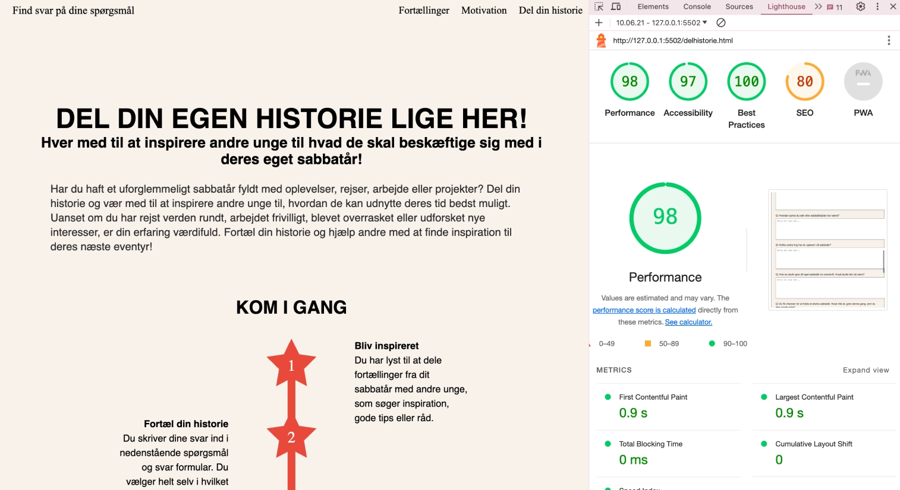
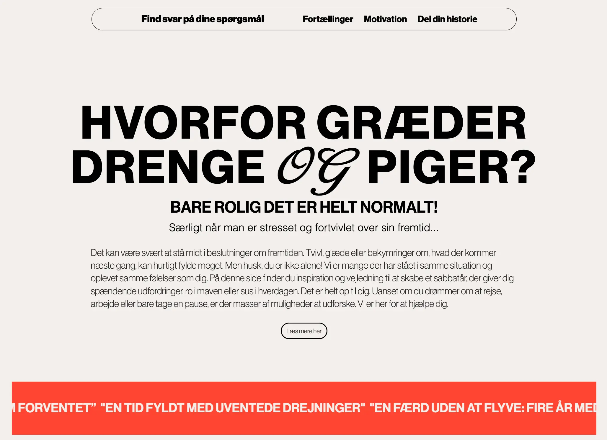

T03 Grundlæggende UX/UI
I dette tema skulle vi designe og udvikle et personligt website over et selvvalgt emne. Her blev vi introduceret til UX (brugeroplevelsen) og UI (brugergræseflader), og vigtigheden af samspillet mellem de 2 elementer.
Først arbejdede vi med research og idé, hvor vi skulle finde og vælge et emne, der interesserede os, og som vi havde viden om. Udover at vælge et emne var det vigtigt at definere et klart formål for brugerne af sitet. Vi lavede research, udvalgte tekster og billeder, og producerede et første udkast til løsningen, som vi testede for at sikre vores idé. I tema 2 gik vi direkte til kodning, og i tema 3 skulle vi lave en del forarbejde først. Det viste sig at være en stor fordel og særligt processen i Figma skabte overblik over sitets endelige udtryk.
Vi lavede forskellige idégenereringsøvelser, og en stor brainstorm, hvor vi bare kunne skrive en masse forskellige ideer ned. Jeg besluttede at lave en hjemmeside, hvor man kunne finde inspiration til sit sabbatår. En hjemmeside hvor man kunne læse historier og fortællinger fra andre unge og hvad de havde arbejdet med, rejst hen, grint af eller fortrudt. Jeg valgte emnet fordi jeg selv var meget i tvivl i mit sabbatår, og følte det var svært at finde ny inspiration, hvis man var gået lidt i stå. Det var derfor vigtigt for mig at lave et site, hvor denne information var nemt tilgængelig for alle!
[research]
Jeg ville gerne prøve at fange alle de følelser og tanker der følger med at have sabbatår. Så de her moodboards var udgangspunkter for designet.
I researchprocessen var jeg meget i tvivl om udtrykket på hjemmesiden. Jeg havde værdiord som legende og stilrent, hvilket jo egentlig er to lidt modstridende stilarter. Jeg synes ikke at farverne eller udtryk lå lige til højrebenet, da sabbatår bringer mange forskellige følelser og tanker frem i folk.
Det var vigtigt for mig at få begge udtryk frem. Det udviklede sig til dette styletile. Helt enkelt, men med elementer som står frem. Særligt den røde farve, de store billeder og first letter, som er anderledes typografi.
Desuden fandt jeg brugertyper og målgruppe for sitet. De brugertyper var med til at bestemme hvilke typer brugerrejser, som jeg ønskede på hjemmesiden.
[interviews]
På mit website var der 2 bærende elementer. Det ene var de store portrætbilleder, og den anden og mest vigtige, nemlig interviewsne. Oprindeligt ville jeg interviewe alle ansigt til ansigt. Men opdagede hurtigt at det blev nogle meget lange interviews. Så størstedelen af de interviews man kan læse på hjemmesiden, er svar jeg har fået tilsendt fra interviewpersonen. Det fungerede meget bedre med de lidt kortere svar, da det var nemmere og mere overskueligt for brugeren at læse. Nedenstående viser de spørgsmål der blev sendt, og til højre det endelige udtryk at interviewsene på websitet.
- Hvad er dit navn og hvor gammel er du?
- Hvornår blev du student?
- Havde du en plan for hvad du gerne ville lave i dit sabbatår? (rejse, arbejde, højskole, andre ting?)
- Hvad har du arbejdet med i dit sabbatår?
- Hvordan synes du selv dine sabbatårsjobs har været?
- Hvilke andre ting har du oplevet i dit sabbatår?
- Hvis du skulle give dit eget sabbatår en overskrift hvad skulle den så være?
- Du fik chancen for at holde et ekstra sabbatår. Hvad ville du gøre denne gang, som du ikke gjorde sidst?
- Hvilket råd ville du give til én der lige er blevet student eller som holder sabbatår?
- Beskriv dit sabbatår med 5 ord eller i en kort beskrivende sætning.
[prototype]
I anden fase skabte vi en digital prototype i Figma baseret på vores moodboards, styletile og research materiale. Efter jeg havde testet både på moodboards og styletiles, fik jeg bekræftet at ovenstående styletile var passende til mit enme, og jeg gik i gang med at udvikle min prototype. Her lavede vi også et heatmap over en indledende ide, som hjalp med at beslutte hvilke elementer der var særligt tiltalende for en bruger.
Prototypen skulle være klikbar og omfatte mindst tre sider, der kunne navigeres som et flow. Her arbejdede vi med visuelle valg, stilbeskrivelser og brugervenlighed. Nedenfor ser i processen fra lofi wireframe til hifi prototype.
[kodet site]
Den tredje fase handlede om at udvikle et kodet site i HTML, CSS og JavaScript ud fra den digitale prototype. Websitet skulle bestå af mindst tre sider og være responsivt, så det tilpassede sig forskellige skærmopløsninger fra mobil til desktop. Vi implementerede breakpoints og CSS media queries for at sikre en god brugeroplevelse, og navigationsmenuen blev tilpasset ved hjælp af en burgermenu lavet med JS. Desuden skulle vi bruge webfonte, tilføje et favicon og validere både HTML og CSS.
Omfanget af mit site blev lidt større end forventet, da jeg ønskede så mange fortællinger som muligt. Jeg endte med at kode 17 forskellige sider, primært for at gøre hjemmesiden så realistisk som muligt, og så der var fuld tilgængelighed på hjemmesiden.
[tests]
Efter vi havde kodet mit emnesite, gik jeg i gang med at teste det. Vi lavede tænke-højt-test med forskellige brugerrejser. Brugerrejserne havde jeg lavet allerede i den indledende research uge, og var allerede testet, med god feedback, på min prototype. Igen var det nemt for brugeren at navigere og fandt hurtigt løsninger på de opgaver der var stillet.
Ligeledes var der god og brugbar feedback på 5-sekunderstesten, likert-testen og light-house-testen.
Jeg lavede 2 forskellige eksperttests, som gav en masse brugbart feedback, som jeg ikke selv havde overvejet. Jeg fik tilrettet efter feedbacken og det gav lige det sidste finish til sitet. Jeg lærte her vigtigheden af at lave de forskellige test, da man tit ser sig lidt blind på sit eget design, og det er godt at få friske øjne på det. Det giver nye ideer og bedere overblik fremover.
[endeligt design]
Det færdige design synes jeg selv blev rigtig godt, og var meget tilfreds med den på det tidspunkt. Hvis jeg kigger tilbage, og særligt i koden, er det tydeligt at vi har lært meget bare siden da, og jeg har lavet en masse benspænd for mig selv i koden. En af de designmæssige ting jeg ville ændre, hvis jeg skulle lave dem om var at tilføje farve til billeder, så der kom mere liv og sitet blev mere dynamisk.
Den fjerde fase var præsentation, hvor vi udarbejdede en præsentation af vores arbejdsproces og løsning. Jeg fik god feedback til præsentation, både på ide og løsning. Særligt for mine æstetiske valg, så det var rigtig dejligt.
Gennem hele processen arbejdede vi med dokumentation. Alt blev registreret i Figma, inklusive researchmetoder, designvalg, tests, og refleksioner over læringsprocessen.